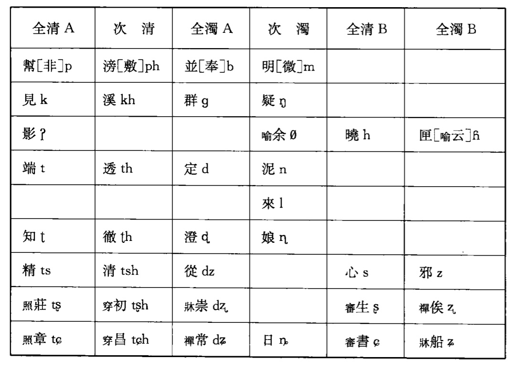
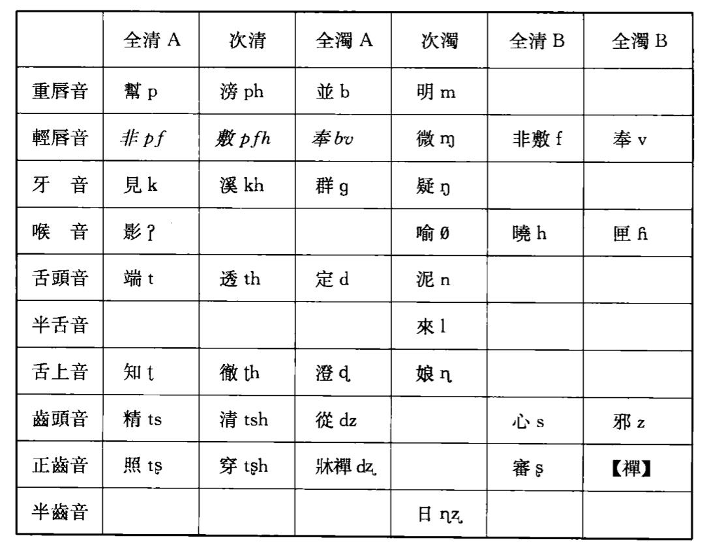

中古音字母
麥耘
切韻三十七

韻圖三十六

王力
聲母
| 早期 | 擬音1 | 後期 | 擬音2 | 備註 |
|---|---|---|---|---|
| 舌音 | ||||
| 端 | t | 端 | t | 舌頭 |
| 透 | tʰ | 透 | tʰ | |
| 定 | d(ʰ) | 定 | d | |
| 泥 | n | 泥 | n | |
| 孃 | *ȵ | 舌上 | ||
| 知 | ȶ | 知 | ȶ | |
| 徹 | ȶʰ | 徹 | ȶʰ | |
| 澄 | ȡ(ʰ) | 澄 | ȡ | |
| 來 | l | 來 | l | 半舌 |
| 齒音 | ||||
| 精 | ts | 精 | ts | 齒頭 |
| 清 | tsʰ | 清 | tsʰ | |
| 心 | s | 心 | s | |
| 從 | dz(ʰ) | 從 | dz | |
| 邪 | z | 邪 | z | |
| 日 | ȵʑ | 日 | *ɲ | 半齒 |
| 牙音 | ||||
| 見 | k | 見 | k | 牙音 |
| 溪 | kʰ | 溪 | kʰ | |
| 羣 | g(ʰ) | 羣 | g | |
| 疑 | ŋ | 疑 | ŋ | |
| 喉音 | ||||
| 影 | ∅ | 影 | *ʔ | 喉音 |
| 曉 | x | 曉 | x | |
| 餘／以 | j | 喻 | j | |
| 匣（雲） | ɣ | |||
| 匣 | 匣 | ɣ | ||
演變
輕脣化：「古無輕脣」
- 重脣分化出輕脣
輕脣十韻：東三、鍾、微、虞、廢、文、元、陽、尤、凡
莊章合流
莊三化二
喻四歸匣
云母脱離匣母，進入喻母
日母擦化
日母從鼻音變爲鼻擦音
船常合流
知照合流
濁上變去
-
參照王力《漢語史稿》。 ↩︎
-
參照王力《漢語語音史》。 ↩︎
-
王力《漢語史稿》全濁送氣，但韻典網、維基百科王力《漢語語音史》作不送氣。此處暫且用括號表示。 ↩︎
-
王力《漢語史稿》原文無「俟」母。擬音參考維基百科。
https://zh.wikipedia.org/zh-hk/%E4%BF%9F%E6%AF%8D ↩︎